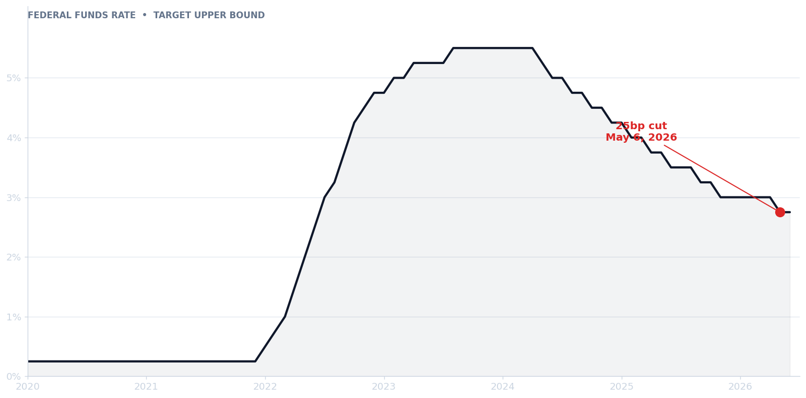

What the Fed's 25bp Cut Means for SMB Borrowers
The Fed's 25bp cut won't change small business loan rates overnight. Here's the realistic timeline and what to do this quarter.

The Federal Reserve cut benchmark interest rates by 25 basis points this week, the first move since the spring pivot. For small business owners watching the news, the question is direct: when does this show up in my borrowing costs?
The short answer is: more slowly than you'd hope, and unevenly across products.
Why SBA loans won't reprice this month
SBA loans tied to the prime rate adjust, but the lender's spread doesn't move with the Fed. Most variable-rate small business loans index off prime, which tracks the Fed funds rate with a roughly two-week lag. The spread your lender charges on top of prime — typically 2.5 to 6 percentage points — reflects credit risk, and that's a slower variable. Expect new originations to reflect the cut within 60 days; existing variable-rate balances will see one billing cycle's worth of relief.
“Fixed-rate SBA 7(a) loans originated this year won't reprice at all. If you locked in at 11.5%, you stay at 11.5% for the life of the loan.”
Fixed-rate SBA 7(a) loans originated this year won't reprice at all. If you locked in at 11.5%, you stay at 11.5% for the life of the loan.
What to actually do this quarter
If you've been postponing a working capital draw, the math is now slightly better than last quarter — but only slightly. The bigger lever is your credit profile: lenders use the cut as cover to widen spreads on weaker files, so a clean trailing-12 P&L matters more than the headline rate. Pull your business credit report, fix any reporting errors, and approach two lenders in parallel so you have leverage on the spread.